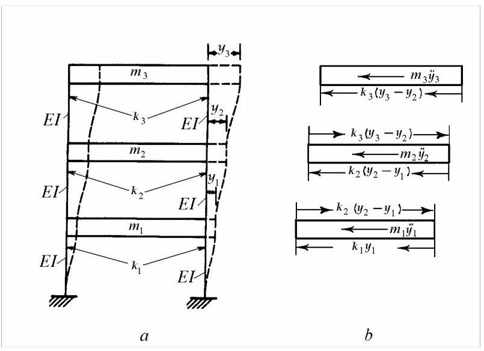
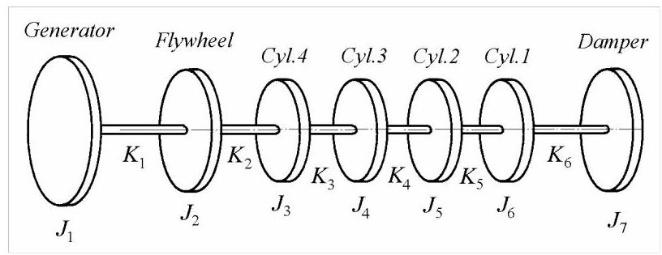
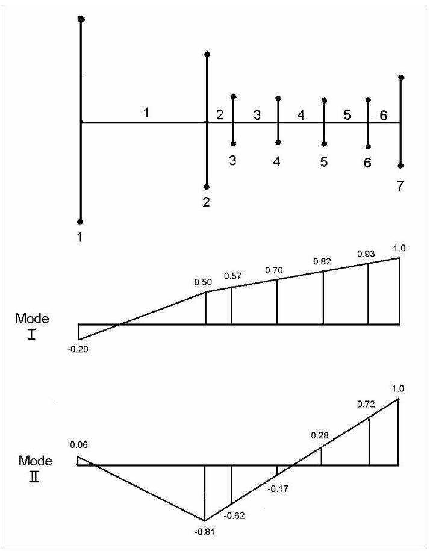
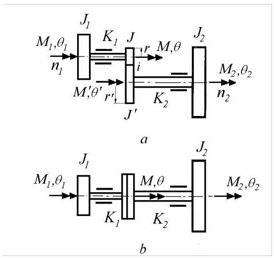
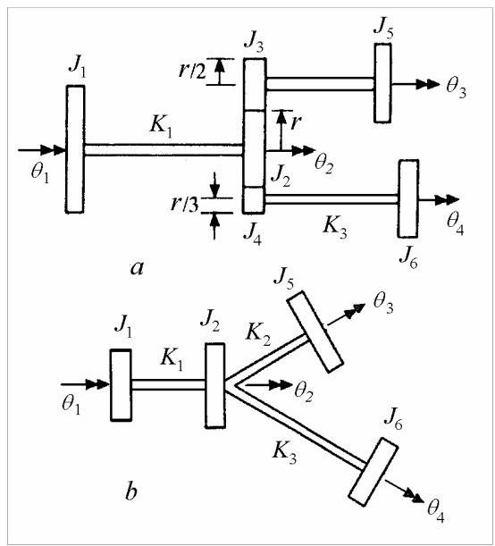
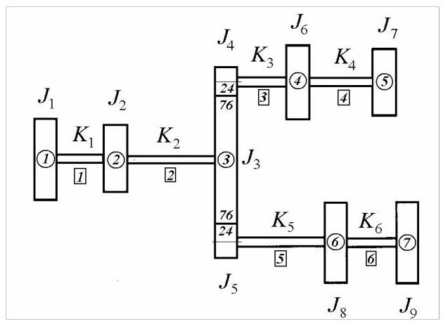

第23篇
5.1.2 多层框架剪切型建筑
剪切型建筑(shear building)是一种在楼层水平截面处无转动的结构。变形后的建筑形似仅受剪力作用的悬臂梁，因而得名。
图5.6\(a\)展示了一个三层剪切型建筑，被建模为具有三个自由度的框架。仅考虑框架在其平面内的侧移，由框架平面内竖向构件的弯曲变形引起。
为实现此类建筑变形，作如下假设:a) 所有楼板为刚性，仅可水平运动，故楼板梁与柱节点处无转动；b) 所有柱不可伸长且无质量；c) 建筑质量集中于楼层，从而将多层建筑的振动简化为有限自由度系统的振动。
将剪切型建筑简化为单跨模型较为方便。水平构件的位移由柱的弹性恢复力抵抗。若将柱视为等截面梁，采用固定端梁一端相对另一端下沉的标准分析方法，可得柱的总弯曲刚度为
其中\(E\)为材料杨氏模量(Young’s modulus)，\(I\)为一根柱的截面二次矩，\(\ell\)为层高(柱长)。

图5.6
利用达朗贝尔原理(d'Alembert's principle)，根据图5.6\(b\)的受力图，令作用于各质量上的力之和为零，即可方便地得到运动方程。第4.1.1节已针对两自由度系统说明该过程。
5.1.3 Torsional Systems
5.1.3 扭转系统
Torsional vibrations of multicylinder reciprocating machines are studied with a simplified lumped mass torsional system (Fig. 5.7) obtained by lumping the inertias of rotating and reciprocating parts from each cylinder at discrete points on a main equivalent shaft. The parts mounted on the shafting, like the flywheel, the torsional damper, the coupling and the driven rotor or the propeller can also be modelled as rigid discs.
多缸往复机械的扭转振动通过简化的集中质量扭转系统(图5.7)研究，该系统将每缸旋转与往复部件的惯量集中于等效主轴上的离散点。安装于轴系上的部件，如飞轮、扭振减振器、联轴器及被驱动转子或螺旋桨，亦可建模为刚性圆盘。

Fig. 5.7
图5.7
The connecting rod is replaced by an equivalent dynamical system comprised of two concentrated masses, one at the crank end, the other at the piston end.
连杆由等效动力学系统替代，该系统由两个集中质量组成，一个位于曲柄端，另一个位于活塞端。
In each cylinder there is a reciprocating mass, \({m}_{rec}\) , consisting of the piston mass and the reduced mass of the connecting rod, and a rotating mass, consisting of the crank throw, counterweight and the reduced mass of the connecting rod, having an inertia \({J}_{\text{rot }}\) . The average inertia per cylinder is
每个气缸内均有一个往复质量\({m}_{rec}\)，由活塞质量与连杆的等效质量组成；另有一个旋转质量，由曲柄臂、平衡重及连杆的等效质量组成，其惯量为\({J}_{\text{rot }}\)。每缸的平均惯量为
where \(r\) is the crank throw radius.
其中\(r\)为曲柄臂半径(crank throw radius)。
The torsional stiffness of crankshaft between cylinders, arising from the combined effect of crank pin twisting and crank web bending, can be either approximated numerically or measured experimentally. The same for the stiffness of the crankshaft between the last cylinder and the flywheel, for the coupling and the driven shaft. The whole system can then be reduced to a torsional model with a series of rigid discs connected by massless flexible shafts, as in Fig. 5.7.
气缸间曲轴的扭转刚度源于曲柄销扭转与曲柄臂弯曲的耦合效应，可通过数值近似或实验测定。同样方法适用于测定末缸与飞轮间曲轴、联轴器及从动轴的刚度。整个系统可简化为图5.7所示的扭转模型:一系列刚性圆盘由无质量柔性轴串联而成。
Example 5.4
例5.4
A diesel-motor-generator set has been reduced to the equivalent system shown in Fig. 5.8, with the \(J\) values in \(\mathrm{{kg}} \cdot {\mathrm{m}}^{2}\) , and with \(K\) values in \({10}^{6} \times \mathrm{{Nm}}/\mathrm{{rad}} : \;{J}_{1} = {11.863},\;{J}_{2} = {2.011},\;{J}_{3} = {J}_{4} = {J}_{5} = {J}_{6} = {0.167}\) , \({J}_{7} = {0.897},\;{K}_{1} = {1.062},\;{K}_{2} = {6.101},\;{K}_{3} = {K}_{4} = {K}_{5} = {3.05},\;{K}_{6} = {4.067}.\) Estimate the fundamental- and second-mode natural frequencies of torsional vibrations. Plot the corresponding mode shapes.
某柴油发电机组已简化为图5.8所示的等效系统，其中\(J\)值单位为\(\mathrm{{kg}} \cdot {\mathrm{m}}^{2}\)，\(K\)值单位为\({10}^{6} \times \mathrm{{Nm}}/\mathrm{{rad}} : \;{J}_{1} = {11.863},\;{J}_{2} = {2.011},\;{J}_{3} = {J}_{4} = {J}_{5} = {J}_{6} = {0.167}\)，\({J}_{7} = {0.897},\;{K}_{1} = {1.062},\;{K}_{2} = {6.101},\;{K}_{3} = {K}_{4} = {K}_{5} = {3.05},\;{K}_{6} = {4.067}.\)。试估算扭转振动的基频与第二阶固有频率，并绘制相应振型。
Solution. \({\omega }_{1} = {552}\mathrm{{rad}}/\mathrm{{sec}},{\omega }_{2} = {1145}\mathrm{{rad}}/\mathrm{{sec}}\) . The mode shapes are shown in Fig. 5.8.
解:\({\omega }_{1} = {552}\mathrm{{rad}}/\mathrm{{sec}},{\omega }_{2} = {1145}\mathrm{{rad}}/\mathrm{{sec}}\)。振型如图5.8所示。

Fig. 5.8
图5.8
Geared systems and car engine-driving train systems are modelled likewise. Geared-branched systems can be modelled as in Section 4.2.4. It is convenient to use an equivalent system which has no gears (or has gears that effect no change of speed) and whose natural frequencies are the same as the frequencies of the original system. This is possible because, while the gears effect a change of rotary speed given by the transmission ratio, the vibration is transmitted through the gears without change in frequency, but with proper change of amplitude.
齿轮传动系统和汽车发动机驱动链系统亦按此方式建模。齿轮分支系统可按4.2.4节方法建模。通常采用一个无齿轮(或齿轮不改变转速)的等效系统，其固有频率与原系统相同。这是因为齿轮虽按传动比改变转速，但振动经齿轮传递时频率不变，仅振幅按相应比例变化。
In Section 4.2.4, the actual system with branches of different rotary speeds was reduced to an equivalent system with all parts having the same speed, usually equal to that of the reference shaft. Progressing away from that shaft to other branch through a gear of transmission ratio \(i\) , the actual \(J\) ’s and \(K\) ’s occurring beyond are multiplied by \({i}^{2}\) . If several gears are passed, the subsequent \(J\) ’s and \(K\) ’s are multiplied by the squares of the respective gear ratios. For the mating gears, the total inertia is obtained by adding to the moment of inertia of the reference gear the moment(s) of inertia of the (two) reduced gear(s) multiplied by \({i}^{2}\) .
在4.2.4节中，实际具有不同转速分支的系统被简化为所有部件转速相同的等效系统，通常取参考轴的转速。自该轴经传动比为\(i\)的齿轮进入其他分支时，实际\(J\)和\(K\)需乘以\({i}^{2}\)。若经过多级齿轮，则后续\(J\)和\(K\)需乘以各级齿轮比的平方。对于啮合齿轮，总惯量为参考齿轮的转动惯量加上(两个)折算齿轮的转动惯量乘以\({i}^{2}\)。
The equivalent model so obtained has the same natural frequencies as the actual system, as well as the same position of nodes. However, in the reduced branches, the amplitude of angular displacements is divided by \(- i\) , while the torque in the branch is multiplied by \(- i\) .
所得等效模型与原系统具有相同的固有频率及节点位置。但在简化分支中，角位移幅值需除以\(- i\)，而分支扭矩需乘以\(- i\)。
A more straightforward approach is given in the following. In the equivalent model, each shaft and disc has the actual speed, only the driven gear is condensed out.
以下给出更直接的方法:在等效模型中，每根轴和每个圆盘保持实际转速，仅将从动齿轮凝聚消去。

Fig. 5.9
图5.9
Consider part of a geared-branched system (Fig. 5.9, a) where (the driving) shaft1and (the driven) shaft 2 are connected by two gears with inertias \(J,{J}^{\prime }\) and of pitch circle radii \(r\) and \({r}^{\prime }\) , respectively. Apart from shaft stiffnesses \({K}_{1}\) and \({K}_{2}\) , and disc mass moments of inertia \({J}_{1}\) and \({J}_{2}\) , the angular displacements and torques acting on each disc are shown in the figure.
考虑齿轮分支系统的一部分(图5.9a)，其中(主动)轴1与(从动)轴2通过两个齿轮连接，齿轮惯量分别为\(J,{J}^{\prime }\)，节圆半径分别为\(r\)和\({r}^{\prime }\)。除轴刚度\({K}_{1}\)和\({K}_{2}\)以及圆盘转动惯量\({J}_{1}\)和\({J}_{2}\)外，图中还示出了各圆盘上的角位移与作用扭矩。
The system motion is described by four torques and four angular displacements. However, only three of each of them are independent, due to the compatibility conditions between the mating gears. Thus it would be useful to consider the torque \({M}^{\prime }\) and the angular displacement \({\theta }^{\prime }\) as dependent variables and eliminate them, replacing the given system by the equivalent model shown in Fig. 5.9, \(b\) . Shaft 1 is taken as the reference shaft.
系统的运动由四个转矩和四个角位移描述。然而，由于啮合齿轮之间的相容性条件，它们各自只有三个是独立的。因此，将转矩\({M}^{\prime }\)和角位移\({\theta }^{\prime }\)视为因变量并消去它们是有益的，从而用图5.9\(b\)所示的等效模型替代原系统。轴1被选为参考轴。
Compatibility of the angular displacements requires that
角位移的相容性要求
while compatibility of torques requires
而转矩的相容性要求
The transmissibility ratio is defined as
传递率定义为
In the original system, the stiffness matrix of shaft 2 is defined by
在原系统中，轴2的刚度矩阵定义为
Using the transformation equations, based on (5.16),
利用基于(5.16)的变换方程，
the stiffness matrix of shaft 2 in the equivalent model is defined as follows
等效模型中轴2的刚度矩阵定义如下
The mass matrix is defined likewise
质量矩阵同样定义
In the following, two rotating discs coupled by an elastic shaft segment are considered as a finite element. For an element of the driven shaft, the element matrices are
下文将两个由弹性轴段耦合的旋转圆盘视为一个有限元。对于从动轴的一个单元，单元矩阵为
The element matrices for the shaft 1 in Fig.5.9 are
图5.9中轴1的单元矩阵为
They can be obtained from the general expressions (5.17) substituting \(i = - 1\) . In general, for elements not adjacent to the gears, one of the end inertias is zero.
它们可通过将\(i = - 1\)代入通用表达式(5.17)获得。一般而言，对于不紧邻齿轮的单元，其中一个端部惯量为零。
Another approach is to condense the system matrices based on the constraint equations expressing the compatibility of the angular displacements of mating gears.
另一种方法是基于表示啮合齿轮角位移相容性的约束方程对系统矩阵进行凝聚。
Example 5.5
例5.5
The geared-branched system shown in Fig. 5.10, \(a\) consists of three rigid discs having mass moments of inertia \({J}_{1},{J}_{5}\) and \({J}_{6}\) and three rigid gears of radii \(r, r/2\) and \(r/3\) having mass moments of inertia \({J}_{2},{J}_{3}\) and \({J}_{4}\) which are connected by three light shafts having torsional stiffnesses \({K}_{1},{K}_{2}\) and \({K}_{3}\) . Derive the equations of free vibration.
图5.10\(a\)所示的齿轮分支系统由三个转动惯量为\({J}_{1},{J}_{5}\)和\({J}_{6}\)的刚性圆盘以及三个半径为\(r, r/2\)和\(r/3\)、转动惯量为\({J}_{2},{J}_{3}\)和\({J}_{4}\)的刚性齿轮组成，它们通过三根扭转刚度为\({K}_{1},{K}_{2}\)和\({K}_{3}\)的轻质轴连接。推导自由振动方程。
Solution. In the upper branch, the speed ratio is \(i = - 2\) . In the lower branch, the speed ratio is \(i = - 3\) . For the equivalent system shown in Fig. 5.10, \(b\) the element matrices are calculated from equations (5.17).
解:在上分支，速比为\(i = - 2\)。在下分支，速比为\(i = - 3\)。对于图5.10\(b\)所示的等效系统，单元矩阵由方程(5.17)计算。
The global matrices are assembled using the direct stiffness approach, obtaining:
利用直接刚度法组装全局矩阵，得到:
and
和
The global vector of angular displacements is
角位移的全局向量
The equations of motion can be written
运动方程可写为
They are used for the estimation of natural frequencies.
它们用于估算固有频率。

Fig. 5.10
图5.10
The arrangement in Fig. 5.10 is a simplified model of a typical marine propulsion drive, with the propeller \({J}_{1}\) driven by a low-pressure turbine \({J}_{5}\) and a high pressure turbine \({J}_{6}\) .
图5.10所示的布置是一个典型船舶推进传动的简化模型，其中螺旋桨\({J}_{1}\)由低压涡轮\({J}_{5}\)和高压涡轮\({J}_{6}\)驱动。
The calculated natural frequencies are compared to the excitation frequencies. Usually the main excitation factor is the variation of the torque on propeller due to the variation of the water forces on the blades during their rotation. The frequency of this variation is called the blade frequency. It is the propeller frequency (once per shaft revolution) multiplied by the number of blades.
计算出的固有频率与激励频率进行比较。通常，主要激励因素是螺旋桨扭矩的变化，该变化由叶片旋转时水动力的变化引起。这种变化的频率称为叶频(blade frequency)，其值为轴每转一圈的螺旋桨频率乘以叶片数。
Example 5.6
例5.6
The geared-branched system shown in Fig. 5.11 has the following parameters: \({J}_{1} = {950},{J}_{2} = {542},{J}_{3} = {406.7},{J}_{4} = {J}_{5} = {6.78},{J}_{7} = {13.55}\) , \({J}_{6} = {J}_{8} = {J}_{9} = {27.12}\left\lbrack {\mathrm{\;{kg}} \cdot {\mathrm{m}}^{2}}\right\rbrack , i = {76}/{24},{K}_{1} = {20.336} \cdot {10}^{6},{K}_{2} = {8.135} \cdot {10}^{6}\) , \({K}_{3} = {1.22} \cdot {10}^{6},{K}_{4} = {0.407} \cdot {10}^{6},{K}_{5} = {1.63} \cdot {10}^{6},{K}_{6} = {2.44} \cdot {10}^{6}\;\left\lbrack {\mathrm{{Nm}}/\mathrm{{rad}}}\right\rbrack .\) Calculate the natural frequencies of torsional vibrations.
图5.11所示的齿轮分支系统具有以下参数:\({J}_{1} = {950},{J}_{2} = {542},{J}_{3} = {406.7},{J}_{4} = {J}_{5} = {6.78},{J}_{7} = {13.55}\)、\({J}_{6} = {J}_{8} = {J}_{9} = {27.12}\left\lbrack {\mathrm{\;{kg}} \cdot {\mathrm{m}}^{2}}\right\rbrack , i = {76}/{24},{K}_{1} = {20.336} \cdot {10}^{6},{K}_{2} = {8.135} \cdot {10}^{6}\)、\({K}_{3} = {1.22} \cdot {10}^{6},{K}_{4} = {0.407} \cdot {10}^{6},{K}_{5} = {1.63} \cdot {10}^{6},{K}_{6} = {2.44} \cdot {10}^{6}\;\left\lbrack {\mathrm{{Nm}}/\mathrm{{rad}}}\right\rbrack .\)，计算其扭转振动的固有频率。

Fig. 5.11
图5.11
Solution. The actual system is reduced to an equivalent model in which the two pinions are condensed out. The element matrices (5.17) are calculated for each segment, then assembled into the global stiffness and mass matrices.
解:将实际系统简化为等效模型，其中两个小齿轮被凝聚掉。对每个区段计算单元矩阵(5.17)，然后组装成全局刚度矩阵和质量矩阵。
The global stiffness matrix is
全局刚度矩阵为
The global mass matrix is
全局质量矩阵为
The natural frequencies have the following values: \({f}_{1} = 0,{f}_{2} = {14.26}\) , \({f}_{3} = {22.98},{f}_{4} = {35.34},{f}_{5} = {41.98},{f}_{6} = {50.52},{f}_{7} = {75.17}\mathrm{\;{Hz}}\) .
固有频率的数值如下:\({f}_{1} = 0,{f}_{2} = {14.26}\)、\({f}_{3} = {22.98},{f}_{4} = {35.34},{f}_{5} = {41.98},{f}_{6} = {50.52},{f}_{7} = {75.17}\mathrm{\;{Hz}}\)。